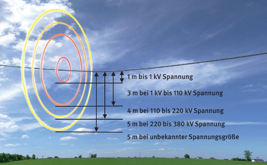

Elektrische Freileitungen bei Arbeiten mit Hubarbeitsbühnen
Beim Arbeiten in der Nähe von spannungsführenden elektrischen Freileitungen
ist neben den allgemeinen Anforderungen
bei Hubarbeitsbühnen auf folgendes zu achten:
- Die Hubarbeitsbühne muss entsprechend der Nennspannung, mindestens aber für 1000 V isoliert sein.
- Es müssen sich mindestens zwei Personen
auf der Arbeitsbühne aufhalten.